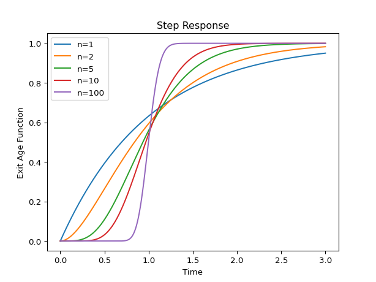
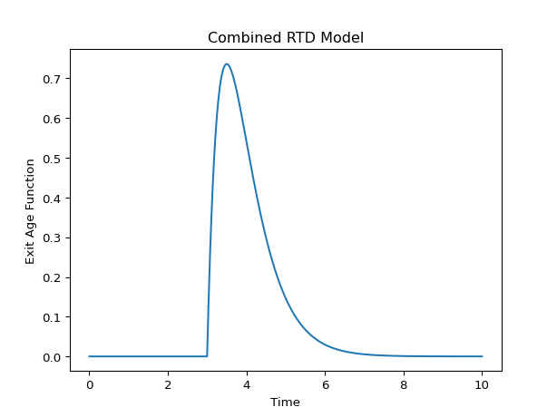
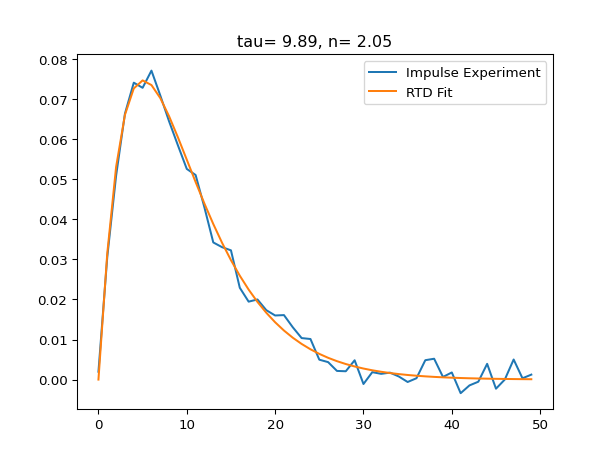

rtdpy documentation¶
rtdpy is a python package for residence time distribution (RTD) analysis. All models and functionality are tested against analytical solutions. 1
Included RTD models:¶
Functionality¶
RTD models are easy to create
for n in [1, 2, 5, 10, 100]:
a = rtdpy.Ncstr(tau=1, n=n, dt=.001, time_end=3)
plt.plot(a.time, a.exitage, label=f"n={n}")
plt.xlabel('Time')
plt.ylabel('Exit Age Function')
plt.title('Impulse Response')
plt.legend()
Step responses are immediately available
for n in [1, 2, 5, 10, 100]:
a = rtdpy.Ncstr(tau=1, n=n, dt=.001, time_end=3)
plt.plot(a.time, a.stepresponse, label=f"n={n}")
plt.xlabel('Time')
plt.ylabel('Exit Age Function')
plt.title('Step Response')
plt.legend()

Combining two models together into a new model is simple
a = rtdpy.Ncstr(tau=1, n=2, dt=.001, time_end=10)
b = rtdpy.Pfr(tau=3, dt=.001, time_end=10)
c = rtdpy.Elist([a, b])
plt.plot(c.time, c.exitage)
plt.xlabel('Time')
plt.ylabel('Exit Age Function')
plt.title('Combined RTD Model')

Integral, mean residence time, and variance are easily obtained
In [1]: a = rtdpy.Ncstr(tau=1, n=2, dt=.001, time_end=10)
In [2]: integral = a.integral()
In [3]: mrt = a.mrt()
In [4]: sigma = a.sigma()
In [5]: print(f'Integral = {integral: .2f}\n'
...: f'Mean residence time = {mrt: .2f}\n'
...: f'Variance = {sigma: .2f}')
...:
Integral = 1.00
Mean residence time = 1.00
Variance = 0.50
We can predict output signals from input signals
a = rtdpy.Ncstr(tau=10, n=1, dt=1, time_end=100)
signal_time = np.arange(0, 100, 1)
input_signal = np.zeros(signal_time.size)
input_signal[10:30] = 1
output_signal = a.output(signal_time, input_signal)
# predicted output_signal is longer than input_signal
plt.plot(signal_time, input_signal, label='Input Signal')
plt.plot(signal_time, output_signal[:signal_time.size],
label='Output Signal')
plt.xlabel('Time')
plt.legend()
Obtain the frequency magnitude damping
a = rtdpy.Ncstr(tau=10, n=2, dt=.01, time_end=200)
omegas = np.logspace(-2, 1, 1000)
mag = a.frequencyresponse(omegas)
plt.plot(omegas, mag)
plt.xscale('log')
plt.yscale('log')
plt.ylabel('Magnitude')
plt.xlabel('Frequency')
Make a funnelplot for input disturbances
a = rtdpy.Ncstr(tau=10, n=2, dt=.01, time_end=200)
times = np.linspace(1, 60, 10)
disturbances = np.linspace(-100, 100, 10)
x, y, response = a.funnelplot(times, disturbances)
cs = plt.contour(x, y, response)
plt.clabel(cs, fmt='%1.0f')
plt.xlabel('Time of Disturbance')
plt.ylabel('Magnitude of Disturbance')
Fit RTD measurement data
from scipy import optimize
# Generate noisy data from NCSTR system with tau=10 and n=2
a = rtdpy.Ncstr(tau=10, n=2, dt=1, time_end=50)
xdata = a.time
noisefactor = 0.01
ydata = a.exitage \
+ (noisefactor * (np.random.rand(a.time.size) - 0.5))
def f(xdata, tau, n):
a = rtdpy.Ncstr(tau=tau, n=n, dt=1, time_end=50)
return a.exitage
# Give initial guess of tau=5 and n=4
popt, pcov = optimize.curve_fit(f, xdata, ydata, p0=[5, 4],
bounds=(0, np.inf))
plt.plot(xdata, ydata, label='Impulse Experiment')
b = rtdpy.Ncstr(tau=popt[0], n=popt[1], dt=1, time_end=50)
plt.plot(xdata, b.exitage, label='RTD Fit')
plt.title(f'tau={popt[0]: .2f}, n={popt[1]: .2f}')
plt.legend()

Author: Matthew Flamm
Footnotes
- 1
Care needs to be taken to have sufficient resolution in time for all models. For Axial Dispersion closed-closed model, very low (<0.1) and very high (>1000) reactor Peclet numbers may need special care.